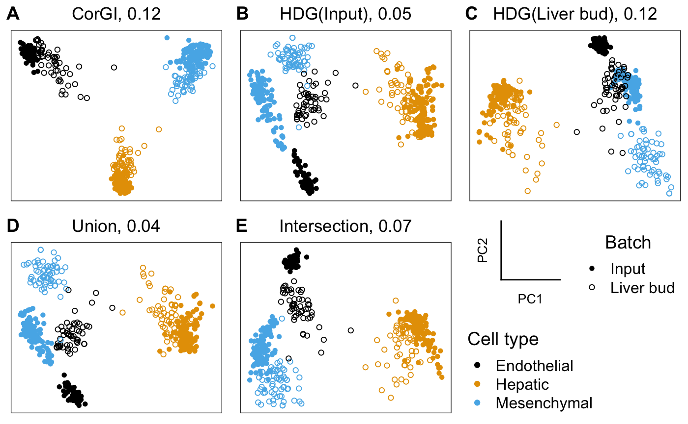
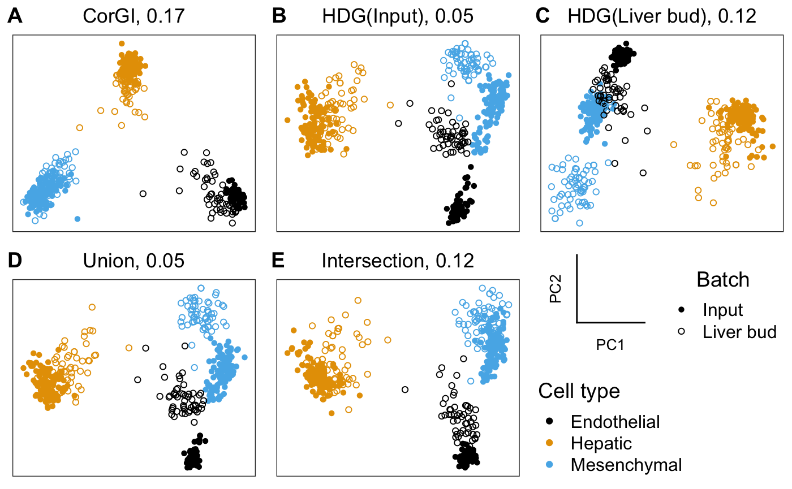
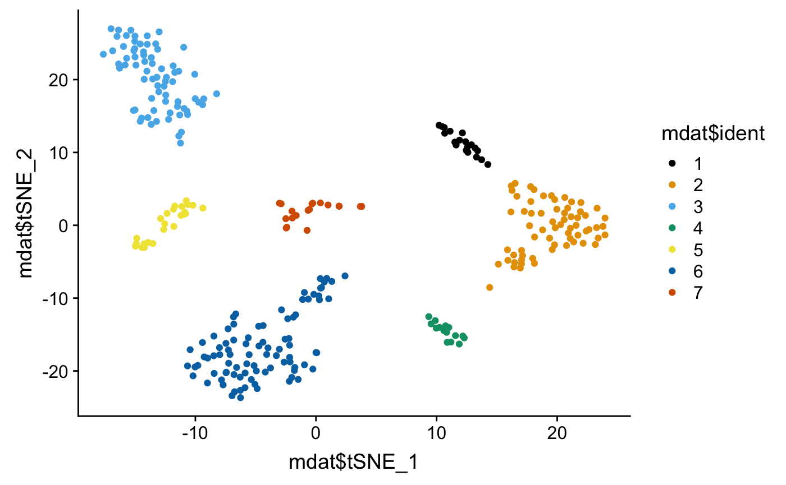
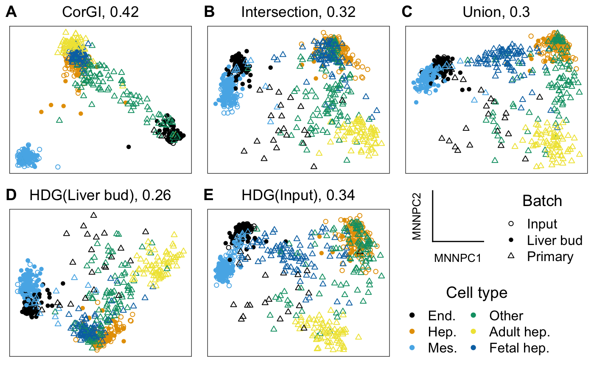
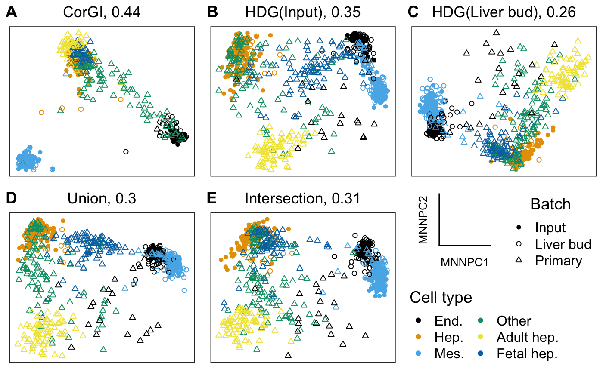

Liver bud development
Yutong Wang
2019-01-31
liver-bud.RmdIntroduction
We analyze the liver bud dataset from Camp et al 2017.
Everything below is totally self-contained: you can copy-paste word for word and it will run. The single-line code block in section CorGI unsupervised feature selection takes one hour to run. Everything else in total takes under one minute.
This vignette contains long sections headed by Reproducing paper figures. These sections are not necessary for using CorGI. To see a more user-friendly pipeline for applying CorGI to your research, see Get Started.
The section under Exploratory analysis (and in particular, normalization by making the library sizes comparable across batches) is also not necessary to use CorGI. In fact, it makes no difference whether the counts are integers, log-transformed, TPM, FPKM, etc.
library(corgi)
library(knitr) # for creating pretty tables
library(ggplot2) # for creating pretty plots
library(cowplot) # for creating pretty panel of plots
library(dplyr) # for creating pretty code
library(forcats) # for concatenating factors
library(scmap) # for the compared feature selection methodData cleaning
Download from GSE and view the top-left corner of the data table
con <- gzcon(
url("ftp://ftp.ncbi.nlm.nih.gov/geo/series/GSE81nnn/GSE81252/suppl/GSE81252_data.cast.log2.liverbud.csv.gz")
)
txt <- readLines(con)
liverbud <- read.csv(file = textConnection(txt))
kable(liverbud[1:10,1:6])| cell_id | experiment | assignment_LB | ESRG | OR4F5 | OR4F29 |
|---|---|---|---|---|---|
| A1_he2 | he2 | HE | 0 | 0 | 0 |
| A1_huvec | huvec | EC | 0 | 0 | 0 |
| A1_lb1 | lb1 | MC-LB | 0 | 0 | 0 |
| A1_msc2 | msc2 | MC | 0 | 0 | 0 |
| A10_he1 | he1 | HE | 0 | 0 | 0 |
| A10_he2 | he2 | HE | 0 | 0 | 0 |
| A10_huvec | huvec | EC | 0 | 0 | 0 |
| A10_lb2 | lb2 | EC-LB | 0 | 0 | 0 |
| A10_lb5 | lb5 | MC-LB | 0 | 0 | 0 |
| A10_msc2 | msc2 | MC | 0 | 0 | 0 |
Note:
The first three columns are metadata while the rest are the log2 expressions
The column
assignment_LBcontains both the lineage and batch informationEC = endothelial cells, HE = hepatic endoderm, MC = mesenchymal cells
IN = input cell lines, LB = liver bud
metadata <- liverbud[,1:3]
counts <- t(as.matrix(liverbud[,4:ncol(liverbud)]))
colnames(counts) <- metadata$cell_id
rownames(metadata) <- metadata$cell_id
metadata$LB_status <-
unlist(lapply(X = metadata$assignment_LB,
FUN = function(x) ifelse(test = grepl("LB",x),yes = "Liver_bud",no = "Input")
))
unique(metadata$LB_status)
#> [1] "Input" "Liver_bud"
metadata$lineage <-
factor(unlist(
lapply(X = metadata$assignment_LB,
FUN = function(x) strsplit(as.character(x),split = "-",fixed = T)[[1]][1])
))
levels(metadata$lineage)
#> [1] "EC" "HE" "MC"
plyr::mapvalues(x = metadata$lineage,
from = levels(metadata$lineage),
to = c("Endothelial","Hepatic","Mesenchymal")) -> metadata$lineageExploratory analysis
Number of cells in each batch in each lineage
| Input | Liver_bud | |
|---|---|---|
| Endothelial | 74 | 53 |
| Hepatic | 113 | 54 |
| Mesenchymal | 104 | 67 |
Convert to SingleCellExperiment objects
library(scran)
camp <- SingleCellExperiment(assays = list(logcounts = counts),colData = metadata)
IN <- camp[,camp$LB_status=="Input"]
LB <- camp[,camp$LB_status=="Liver_bud"]Normalization by making the library sizes comparable across batches
Combine the datasets
Reproducing paper figures
Gene sets to compare CorGI against
HDG_ranking <- function(sce){
rowData(sce)$feature_symbol <- rownames(sce)
sce <- selectFeatures(sce)
return(rownames(sce)[order(rowData(sce)[["scmap_scores"]],decreasing = T,na.last = T)])
}
gene_sets <- get_compared_gene_sets(
batch1_top_genes = HDG_ranking(IN),
batch1_name = "HDG(Input)",
batch2_top_genes = HDG_ranking(LB),
batch2_name = "HDG(Liver bud)",
desired_size = length(corgi_gene_set)
)
gene_sets[["CorGI"]] <- corgi_gene_set
gene_sets <- gene_sets[6-(1:5)]
lapply(gene_sets, length)
#> $CorGI
#> [1] 200
#>
#> $Intersection
#> [1] 200
#>
#> $Union
#> [1] 199
#>
#> $`HDG(Liver bud)`
#> [1] 200
#>
#> $`HDG(Input)`
#> [1] 200embeddings_pca <-
lapply(
X = gene_sets,
FUN = function(gene_set) {
prcomp(t(combined[gene_set,]),rank. = 2)$x
}
)my_shape_palette <- scale_shape_manual(values = c(1, 16))
my_color_palette <- scale_color_manual(values = c("#E69F00","#000000", "#56B4E9"))get_scatterplots <- function(embeddings, batch, cell_type){
lapply(X = names(gene_sets),
FUN = function(gs_name) {
emb <- embeddings[[gs_name]]
plot_dimensionality_reduction(emb, batch, cell_type) +
my_shape_palette +
my_color_palette +
ggtitle(paste0(gs_name, ", ", round(corgi::batch_mixing(emb, batch), 2)))
})
}
get_AUC <- function(embeddings, cell_type, cell_type_pred, train, test){
knn_results <-
Reduce(rbind,lapply(X = names(embeddings),
FUN = function(gs_name){
emb <- embeddings[[gs_name]]
results <- corgi::cluster_coherence(emb, cell_type, cell_type_pred, train, test)
results$Gene_set <- gs_name
return(results)
}))
return(knn_results)
}emb_name <- "PC"
embeddings <- embeddings_pca
get_scatterplots(embeddings,
batch,
lineage) -> dr_plots
plot_grid(
plot_grid(
get_axes_legend(emb_name),
get_shape_legend(batch,my_shape_palette)
),
get_color_legend(lineage,my_color_palette),
nrow = 2) -> legends
dr_plots[[length(dr_plots)+1]] <- legends
dr_plots[["nrow"]] <- 2
dr_plots[["labels"]] <- c("A","B","C","D","E","")
do.call(plot_grid,dr_plots) -> top_panel
top_panel
train <- batch == "Input"
test <- batch == "Liver bud"
# AUC plots
lapply(
X = c("Endothelial","Hepatic","Mesenchymal"),
FUN =
function(ct) {
df <- get_AUC(embeddings, lineage, ct, train, test)
df$Gene_set <- factor(df$Gene_set,levels = names(embeddings))
ggplot(df,
aes(x = FPR, y = TPR)) +
geom_point(aes(color = Gene_set, shape = Gene_set),size = 3) +
scale_shape_manual(values = 65:70) +
theme_bw() +
theme(legend.position = "bottom") +
scale_x_continuous(limits = c(0,1)) +
scale_y_continuous(limits = c(0,1)) +
ggtitle(ct)
}
) -> AUC_plts
AUC_legends <- get_legend(AUC_plts[[1]])
lapply(X = AUC_plts, FUN = function(p) p + theme(legend.position = "none")) -> AUC_plts
AUC_plts[["nrow"]] <- 1
AUC_plts[["labels"]] <- c("F","G","H")
plot_grid(
do.call(what = plot_grid, args = AUC_plts),
AUC_legends,
nrow = 2,
rel_heights = c(10,1)) -> bottom_panel
bottom_panel
Out of sample alignment of human liver cells
In the previous sections, we ran CorGI feature selection on the input and liver bud cells. We consider the human liver cells sequenced also by Camp et al. We analyze how genes obtained from the previous section can be used to gain insight in the new data.
Data cleaning
con <- gzcon(
url("ftp://ftp.ncbi.nlm.nih.gov/geo/series/GSE96nnn/GSE96981/suppl/GSE96981_data.human.liver.csv.gz")
)
txt <- readLines(con)
human_liver <- read.csv(file = textConnection(txt))The first 13 columns are metadata
colnames(human_liver)[1:13]
#> [1] "tsne_id" "ident" "tSNE_1" "tSNE_2" "PC1"
#> [6] "PC2" "PC3" "PC4" "PC5" "nGene"
#> [11] "orig.ident" "cell_id" "category"
mdat <- human_liver[,1:13]The remaining are genes
colnames(human_liver)[14:20]
#> [1] "A1BG" "A1CF" "A2M" "A2ML1" "A3GALT2" "A4GALT" "A4GNT"
counts <- t(as.matrix(human_liver[,14:ncol(human_liver)]))
colnames(counts) <- mdat$cell_idLet us refer back to Camp et al. 2017, Figure 3b for the cluster labels:

Just to double check…
mdat$cell_type_raw <-
plyr::mapvalues(mdat$ident,
from = 1:7,
to = c("Lymphoblast",
"Erythroblast",
"Adult hepatocyte",
"Mesenchymal",
"Endothelial",
"Fetal hepatocyte",
"Kupffer"))
qplot(mdat$tSNE_1,mdat$tSNE_2,color = mdat$cell_type_raw)
Collapse some of the cell types for visualization
mdat$lineage_show <-
plyr::mapvalues(mdat$ident,
from = 1:7,
to = c("Other",
"Other",
"Adult hepatocyte",
"Mesenchymal",
"Endothelial",
"Fetal hepatocyte",
"Other"))Collapse Adult hepatocyte and Immature hepatocyte to simply Hepatic for the KNN classification part
Reproducing paper figures
Combine the datasets and normalize
shared_genes <- intersect(rownames(IN),rownames(HL))
IN <- IN[shared_genes,]
LB <- LB[shared_genes,]
HL <- HL[shared_genes,]
out <- scran::multiBatchNorm(IN,LB,HL,assay.type = "logcounts")
IN <- out[[1]]
LB <- out[[2]]
HL <- out[[3]]
lineage_show <- fct_c(IN$lineage,LB$lineage,HL$lineage_show)
lineage_pred <- fct_c(IN$lineage,LB$lineage,HL$lineage_predict)
batch <- c(rep("Input",ncol(IN)),rep("Liver bud",ncol(LB)),rep("Primary",ncol(HL)))my_shape_palette <- scale_shape_manual(values = c(1, 16,2))
my_color_palette <- scale_color_manual(values = c("#000000", "#E69F00", "#56B4E9", "#009E73", "#F0E442", "#0072B2"))embeddings_mnn <-
lapply(
X = gene_sets,
FUN = function(gene_set) {
mnn.out <- mnnCorrect(logcounts(IN[gene_set,]),
logcounts(LB[gene_set,]),
logcounts(HL[gene_set,]))
t.mnn <- as.matrix(t(do.call(cbind, mnn.out$corrected)))
pca.mnn <- prcomp(t.mnn, rank=2)
return(pca.mnn$x)
}
)unique(lineage_show)
#> [1] Hepatic Endothelial Mesenchymal Fetal hepatocyte
#> [5] Other Adult hepatocyte
#> 6 Levels: Endothelial Hepatic Mesenchymal Other ... Fetal hepatocyte
plyr::mapvalues(
x = lineage_show,
from = unique(lineage_show),
to = c("Hep.","End.","Mes.", "Fetal hep.", "Other", "Adult hep.")
) -> lineage_showemb_name <- "MNNPC"
embeddings <- embeddings_mnn
get_scatterplots(embeddings,
batch,
lineage_show) -> dr_plots
plot_grid(
plot_grid(
get_axes_legend(emb_name),
get_shape_legend(batch,my_shape_palette)
),
get_color_legend(lineage_show,my_color_palette,ncol = 2),
nrow = 2) -> legends
dr_plots[[length(dr_plots)+1]] <- legends
dr_plots[["nrow"]] <- 2
dr_plots[["labels"]] <- c("A","B","C","D","E","")
do.call(plot_grid,dr_plots) -> top_panel
top_panel
train <- batch %in% c("Input","Liver bud")
test <- batch == "Primary"
# AUC plots
lapply(
X = c("Endothelial","Hepatic","Mesenchymal"),
FUN =
function(ct) {
df <- get_AUC(embeddings, lineage_pred, ct, train, test)
df$Gene_set <- factor(df$Gene_set,levels = names(embeddings))
ggplot(df,
aes(x = FPR, y = TPR)) +
geom_point(aes(color = Gene_set, shape = Gene_set),size = 3) +
scale_shape_manual(values = 65:70) +
theme_bw() +
theme(legend.position = "bottom") +
scale_x_continuous(limits = c(0,1)) +
scale_y_continuous(limits = c(0,1)) +
ggtitle(ct)
}
) -> AUC_plts
AUC_legends <- get_legend(AUC_plts[[1]])
lapply(X = AUC_plts, FUN = function(p) p + theme(legend.position = "none")) -> AUC_plts
AUC_plts[["nrow"]] <- 1
AUC_plts[["labels"]] <- c("F","G","H")
plot_grid(
do.call(what = plot_grid, args = AUC_plts),
AUC_legends,
nrow = 2,
rel_heights = c(10,1)) -> bottom_panel
bottom_panel